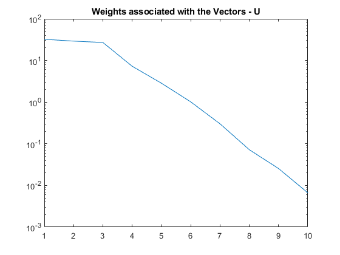

Contents
clear,clc,close all
PREPARING DATA
WE CREATE A TIME SERIES DATA CONSISTING OF TWO MAIN COMPONENTS
[X,Y] = meshgrid(0:0.01:1,0:0.01:1); Xf = reshape(X,[],1);Yf = reshape(Y,[],1); T = 0:pi/100:4*pi; w1 = 5;w2 = 25; % We create signals tailored at predetermined frequency f1 = 10*(exp(-((Xf-0.5).^2 + (Yf-0.5).^2)./(2*(0.15 + 0.1*sin(w1*T)).^2))); f2 = 5*sin(10*Xf - w2*T); f3 = 0.01*rand(size(f1)); f = f1+f2+f3; figure('units','normalized','outerposition',[0 0 1 1]) filename1 = "Inputs.gif" limits = [-10,10]; for i = 1:round(length(T)/5) subplot(1,3,1) imagesc(reshape(f1(:,5*i),101,101)) title('Component 1: Gaussian') text(0.5,0.5,num2str(5*i)) caxis(limits) colorbar axis equal off subplot(1,3,2) imagesc(reshape(f2(:,5*i),101,101)) title('Component 2: Sine Wave') caxis(limits) colorbar text(0.5,0.5,num2str(5*i)) axis equal off subplot(1,3,3) imagesc(reshape(f(:,5*i),101,101)) title('Final Input Data') caxis(limits) colorbar text(0.5,0.5,num2str(5*i)) axis equal off drawnow frame = getframe(1); im{i} = frame2im(frame); [A,map] = rgb2ind(im{i},256); if i == 1 imwrite(A,map,'Inputs.gif','gif','LoopCount',Inf,'DelayTime',1); else imwrite(A,map,'Inputs.gif','gif','WriteMode','append','DelayTime',1); end end

PERFORM DMD
DYNAMIC MODE DECOMPOSITION
% DMD X1 = f(:,1:end-1); X2 = f(:,2:end); [U,S,V] = svd(X1,'econ'); r = 10; U = U(:,1:r); S = S(1:r,1:r); V = V(:,1:r); figure(2) semilogy(100*diag(S)/sum(diag(S))) title("Weights associated with the Vectors - U") saveas(gcf,'Weights.png') Atilde = U'*X2*V*inv(S); [W,eigs] = eig(Atilde); Phi = X2*V*inv(S)*W;
RESULTS
WE VERIFY IF THE MAIN COMPONENTS HAVE BEEN SEPARATED AND IF RECONSTRUCTED DATA IS ACCURATE
figure(3) for i = 1:r subplot(2,5,i) imagesc(reshape(real(Phi(:,i)),101,101)) title(['Mode:',num2str(i)]) axis equal off end saveas(gcf,'Natural Modes.png') lambda = diag(eigs); omega = log(lambda)/(T(2)-T(1)); x1 = X1(:,1); b = Phi\x1; mm1 = size(X1,2); t_d = zeros(r,mm1); for i = 1:mm1 t_d(:,i) = b.*exp(omega*T(i)); end f_dmd = [x1,Phi*t_d]; figure('units','normalized','outerposition',[0 0 1 1]) filename2 = 'Comparison.gif' for i = 1:round(length(T)/2)-1 subplot(1,2,1) imagesc(reshape(real(f_dmd(:,2*i)),101,101)) text(0.5,0.5,num2str(2*i)) caxis([-10,10]) title("DMD - Reconstruction") colorbar axis equal off subplot(1,2,2) imagesc(reshape(f(:,2*i),101,101)) caxis([-10,10]) title("Actual Input") colorbar text(0.5,0.5,num2str(2*i)) axis equal off drawnow frame = getframe(gcf); im{i} = frame2im(frame); [A,map] = rgb2ind(im{i},256); if i == 1 imwrite(A,map,filename2,'gif','LoopCount',Inf,'DelayTime',1); else imwrite(A,map,filename2,'gif','WriteMode','append','DelayTime',1); end end